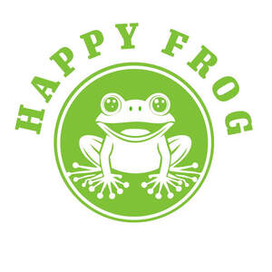
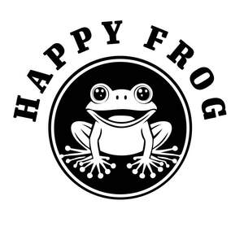
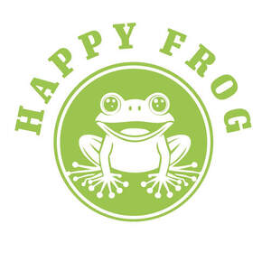
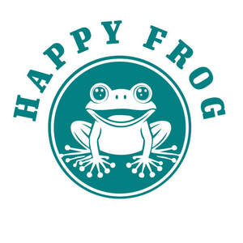

Trade Mark Journal No.2025/022 30 May 2025
UK00004204850 16 May 2025 (41,43,44)
Mark 1

Mark 2

Mark 3

Mark 4

- Class 41
- Health and wellness training; Health education; Education services relating to conservation of the environment; Education and training relating to nature conservation and the environment; Education services relating to conservation; Vocational education; Education services relating to health; Education services; Education services related to the arts; Education services relating to the horticultural industry; Educational services for providing courses of education; Education and training; Vocational education and training services; Research in the field of education; Educational services relating to the conservation of nature; Professional consultancy relating to education; Education services relating to design; Provision of education courses; Residential education courses; Provision of educational services relating to ecological topics; Training in yoga; Yoga instruction; Meditation training; Teaching of meditation practices; Education services relating to yoga; Education services relating to meditation; Conducting workshops and seminars in self awareness; Life coaching (training); Exercise and fitness classes; Conducting workshops and seminars in personal awareness; Perceptual teaching services; Photography instruction; Provision of courses of instruction in self awareness; Arranging and conducting of workshops and seminars in self-awareness; Training for parents in parenting skills; Training in communication techniques; Education, teaching and training; Personal coaching [training]; Training of teachers; Practical training; Training or education services in the field of life coaching; Career counselling [training and education advice]; Art exhibitions; Mural art painting services; Instruction in the field of the visual arts; Educational and instruction services relating to arts and crafts; Conducting of workshops and seminars in art appreciation; Cooking instruction; Screenplay writing; Writing of texts; Publishing, reporting, and writing of texts; Script writing services; Writing services for blogs; Creation [writing] of podcasts; Writing and publishing of texts, other than publicity texts; Speech writing for non-advertising purposes; Editing of written texts; Educational services for teaching manual writing; Creation [writing] of educational content for podcasts; Custom writing services for non-advertising purposes; Publishing of stories; Teaching in the field of remedial reading; Freelance journalism; Publication of instructional literature; Consultation services relating to the publication of written texts; Songwriting; Educational research; Organisation of cultural events; Organising community cultural events; Organising events for cultural purposes; Cultural activities; Organisation of educational events; Organisation of exhibitions for cultural and educational purposes; Organisation of cultural activities for summer camps; Conducting of educational events; Art exhibition services; Exercise classes; Fitness and exercise training services; Health and fitness training; Conducting training sessions on physical fitness online; Physical fitness instruction; Consultancy relating to physical fitness training; Teaching services for communication skills; Tuition in homeopathy; Tuition in herbalism; Production of podcasts; Provision of entertainment via podcast; Production of video and audio recordings; Publication of audio books; Entertainment services for sharing audio and video recordings; TV and radio presenter services; Presentation of radio programmes; Production and presentation of radio programmes; News programme services for radio or television; Production of audio recordings; Audio recording and production; Production of video recordings; Production of educational sound and video recordings; Selection and compilation of pre-recorded music for broadcasting by others; Audio, video and multimedia production, and photography; Production of audio programs; Production of audio entertainment; Entertainment in the nature of dinner theater productions; Theatre productions; Business training; Business mentoring services; Coaching services; Training in business skills; Business training consultancy services; Conducting of educational courses in business management; Plant exhibitions.
- Class 43
- Café services; Coffee shop services; Pizza parlors; Fast-food restaurant services; Catering of food and drinks; Take-away restaurant services; Mobile restaurant services; Providing food and drink catering services for exhibition facilities; Salad bars.
- Class 44
- Health counselling; Health care relating to relaxation therapy; Psychological counselling; Counselling relating to nutrition; Psychotherapy services; Psychotherapy; Holistic psychotherapy; Therapy services; Meditation services; Animal-assisted therapy; Advisory and consultancy services relating to the use of non-chemical treatments for sustainable agriculture and horticulture; Landscape gardening services; Landscape gardening; Horticulture, gardening and landscaping; Gardening services; Herbalism; Art therapy; Gardening; Horticulture services; Horticulture; Agriculture, horticulture and forestry services; Reiki services; Forest habitat restoration; Cultivation of plants; Plant nursery services; Pruning of trees; Tree planting; Tree nurseries; Garden tree planting; The planting of trees for carbon offsetting purposes; Tree nurseryman services; Tree surgery; Tree nursery services; Tree planting for carbon offsetting purposes; Consultancy relating to tree planting; Garden or flower bed care.
Victoria Reakes